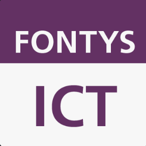

Role
Frontend Developer, Designer
Tools
HTML, CSS, JavaScript
Outcome
Responsive portfolio website
Timeline
Ongoing iterations

Project Overview
This personal portfolio website was designed based on extensive target audience research with teachers and internship companies. The goal was to create a minimal, focused experience that quickly communicates who I am, what I've created, and how to navigate my work. The design emphasizes clarity and project visibility while maintaining a professional editorial aesthetic.
Design Process
Research
Conducted interviews with teachers and companies to understand what they value in a portfolio. Key findings: clarity, quick project access, and minimal distraction.
Strategy
Developed a minimal design strategy focused on strong typography, clear hierarchy, and quick navigation to project details.
Development
Built the website using semantic HTML, modern CSS with responsive design, and vanilla JavaScript for interactive elements.
Iteration
Gathered feedback from peers and industry professionals, implementing improvements for visual clarity and project presentation.
Key Features
- Clean, minimal design with strong focus on content
- Responsive layout that works on all devices
- Fast-loading with semantic HTML structure
- Clear project presentation with detailed metadata
- Smooth navigation and subtle interactions
- Accessibility-focused design patterns
Design Principles
The portfolio follows three core design principles: Clarity through strong typography and hierarchy, Focus by keeping visual distractions minimal, and Usability by making it easy for viewers to understand my work and get in touch. Every element serves a purpose, and the design scales beautifully across different screen sizes.
More projects